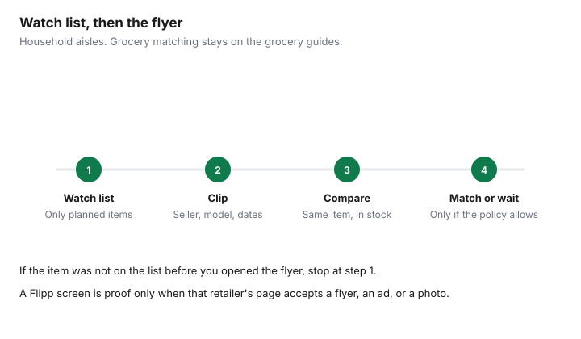

Household Items and Supplies · Canada
Using Flipp for Household Items: Canadian Tire, Home Depot, and Walmart Flyers Without Impulse Buys
Flyer apps get used for milk and then ignored for detergent, paper, and a vacuum. The household version is smaller on purpose. You write the items you will buy, then you look at Canadian Tire, Home Depot, and the other banners that actually stock them. The Flipp homepage opened 26 September 2026 offers flyers, coupons, and a shopping list once you enter a postal code. A slogan on that homepage about weekly grocery savings is a grocery claim. It is not a household result, and it is not repeated here as one.
Grocery flyer matching, including how a food ad becomes a match, is the Flipp grocery guide and the price-match system. This page stays on non-grocery household goods. Who still matches a competitor is the 2026 price-match guide.
Key takeaways
- Flipp's homepage, opened 26 Sep 2026, is flyers, coupons, and a shopping list after a postal code. Grocery matching stays on the grocery guides.
- Canadian Tire's guarantee, text retrieved that day, asks for a competing flyer or online ad. It does not name Flipp.
- Home Depot, read the same day, accepts a flyer, a printout, a website link, or a photo of an identical in-stock item.
- A bonus offer is checked only after the item is already on the wish list.
- If it was not on the list before you opened the flyer, you do not buy it.
Set up Flipp watch lists for household staples and big-ticket items
Two lists, not twenty. Staples are the things you replace on a schedule: trash bags, dish liquid, batteries you trust, a furnace filter in the size already written on the old one. Big-ticket is a short list with model numbers: one vacuum, one small appliance, one storage piece that fits a measured space. The Flipp shopping list is a place to park those names after you have typed them. It is not a feed you scroll for ideas.
Enter the postal code for the store you will actually visit. A flyer from a city you will not drive to is not a price. For a big-ticket row, add the model number in the note, because a brand name matches too many products. If Flipp's screen does not show the model, open the retailer's own flyer or product page and record that URL. The app is the index. The retailer's page is the price.
Which banners' flyers matter for household goods
Start with the banners that stock the aisle you are in: Canadian Tire for housewares, tools, and cleaning gear; Home Depot, RONA, and Home Hardware for bulbs, filters, and repair supplies; Walmart and Giant Tiger for paper and cleaner; Best Buy when the item is an appliance or electronics; Shoppers when you are in the household aisle, not the food aisle. You do not need every flyer in the postal code. You need the ones that sell the row on your list.
A flyer that will not be accepted as price-match proof can still be the store where you buy. Walmart's competitor-ad match is already covered on the price-match guide, which records that it ended. Do not carry a Canadian Tire flyer to Walmart and expect this page to back you up. Giant Tiger's homepage and about page, opened 26 September 2026, did not show a price-match policy. Shoppers' household proof rules were not on a page this draft opened. The table leaves those cells as not verified, rather than guessing.
| Banner | Household categories to watch | Accepted as price-match proof? | Source checked 26 Sep 2026 |
|---|---|---|---|
| Canadian Tire | Housewares, small appliances, cleaning gear, tools | The guarantee asks for a competing flyer or online ad. Flipp is not named. Local store within 200 km, or see the full conditions on the price-match guide | marks.com Canadian Tire guarantee, text retrieved 26 Sep 2026. Direct request returned 403 |
| Home Depot | Bulbs, filters, tools, storage, major appliances | At checkout: a flyer, printout, website link, or photo of an identical, new, in-stock item. A photo can be a phone picture if it shows the seller and the model | homedepot.ca price guarantee, read 26 Sep 2026 |
| RONA / RONA+ | Same hardware aisle as Home Depot | A direct open of the price-guarantee URL stopped at a security check. A retrieval the same day said RONA will meet a competitor's lower price on an identical new in-stock item, and that affiliated dealers may not apply the corporate offer. Kilometre figure not reprinted | rona.ca in-store price guarantee, 26 Sep 2026 |
| Home Hardware | Dealer-store bulbs, filters, paint, tools | Not verified. Homepage confirms a dealer-owned chain and a flyer link. No price-match sentence was opened | homehardware.ca homepage, 26 Sep 2026. Return and price pages did not load |
| Walmart | Paper, cleaner, small household appliances | Do not use a competitor flyer as a Walmart match. The price-match guide records the end of competitor Ad Match | See the household price-match guide, not a new reading of a 2020 news story |
| Best Buy | Small appliances, vacuums, electronics | Not re-opened here. The price-match guide records that Best Buy verifies the competitor and the stock itself. A direct request to the low-price page returned 403 on 26 Sep 2026 | bestbuy.ca low-price URL, 403. Use the price-match guide before you claim a screenshot counts |
| Shoppers, household aisle | Cleaner and paper when you are already in the store | Not verified on a Shoppers policy page opened for this draft | No Shoppers household price-match page opened 26 Sep 2026 |
| Giant Tiger | Cleaner, paper, limited home basics | No price-match policy found on the pages opened | gianttiger.com homepage and about page, 26 Sep 2026 |
Using a Flipp flyer as price-match proof at Canadian Tire or Best Buy
Canadian Tire's price-match guarantee, hosted on marks.com, says "bring a competing flyer or online ad." The text retrieved 26 September 2026, after a direct request returned 403, also says that if you have already purchased, you visit a store within 30 days with the receipt, or within 14 days if you are matching another Canadian Tire store, and that the competing retail store is in Canada within 200 km of where you are asking. Flipp is not named. A phone screen is useful when it shows the competitor, the identical item, the price, and that the ad is current. If the associate cannot verify it, the answer is no. Re-read the guarantee before a large claim, because this draft could not load the page directly.
Best Buy's low-price page returned 403 to a direct request the same day. This draft does not invent a sentence that says Best Buy accepts Flipp. The price-match guide records, from text retrieved that day, that you identify the competitor and Best Buy verifies price and immediate stock. Bring the model number and let them verify. A cropped tile that hides the seller is not proof. Home Depot is the page that explicitly lists a photo among accepted proof, which is the closest official wording to a phone picture, and it still requires the identical brand, model, and size, in stock at both sellers.
Avoid flyer-driven impulse buys: the wish-list rule
Open the list first. If the item is not on it, you do not clip it. A large percentage off a gadget you had not planned is how a flyer becomes a second vacuum. The wish-list rule is binary: planned, or not. "It might be useful" is not planned. Write the list on paper or in Flipp's shopping list before you type the postal code, so the flyer cannot add rows.
Big-ticket rows need a target price from a week when nothing was "on sale." If the flyer price is above that target, you wait, even if the flyer looks dramatic. The Canadian Tire sale guide is why a regular tag is a weak target. Your target is a price you have seen, with a date, not the crossed-out number on this week's cover.
Pairing flyers with loyalty bonus events
Points come third. First the item is on the list. Second the price is one you would pay without points. Third you check whether a bonus is actually available. Triangle's collecting page, opened 26 September 2026, says you need to be a Triangle Rewards member to collect bonus Canadian Tire Money, some emailed offers must be activated, and a bonus multiplier is added to the base rate of 0.4 percent. The program's own example: on a $100 pre-tax purchase, a 20-times multiplier earns a bonus $8 (20 times 0.4 percent times $100). CT Money is collected on the pre-tax amount, and on the balance after any redemption. That example is not a promise that this week's flyer stacks the same way. Read the offer.
Home Hardware's Scene+ article, retrieved 26 September 2026, says 50 Scene+ points per $50 spent before taxes and delivery, with a $50 minimum, at participating Home Hardware, Home Hardware Building Centre, Home Building Centre, and Home Furniture stores. Redemption on that page is 1,000 points for $10 off. Pro contractor purchases and house accounts are excluded. A flyer price plus a bonus you have not activated is just the flyer price. The earn rates and the household way to use them are on the Canadian Tire Money and Scene+ guide. Do not buy a non-list item to "use the points."
Weekly 10-minute household flyer routine
Ten minutes is the name of the routine, not a measured study. The order is what matters. Minute one: open the wish list and nothing else. Then open only the banners that sell those rows. Clip an ad only when the model matches. Compare that price with the target on the list and with one other seller if the item is expensive. If a price-match policy you have re-read will accept the proof, ask. If it will not, buy at the cheaper store or wait.
Stop when the list is done, even if the timer is not. The leftover flyers are how impulse starts. Once a month, delete list rows you no longer need. A watch list that only grows is a catalogue.

Sources & date stamps
- flipp.com, opened 26 Sep 2026: flyers, coupons, shopping list, postal code. The grocery-savings slogan on the homepage is not used as a household figure.
- Canadian Tire price-match guarantee on marks.com, text retrieved 26 Sep 2026: competing flyer or online ad; 30 days with receipt; 14 days versus another Canadian Tire; retail stores in Canada within 200 km. Direct request returned 403.
- Home Depot Canada price guarantee, read 26 Sep 2026: flyer, printout, website link, or photo; identical brand, model, and size; in stock.
- rona.ca in-store price guarantee, 26 Sep 2026: direct open hit a security check. Retrieval the same day: meet an identical new in-stock price; affiliated dealers may not apply the corporate offer. Radius number not reprinted.
- Best Buy low-price URL, 26 Sep 2026: direct request returned 403. Proof wording is not restated from memory.
- Triangle collecting and redeeming, opened 26 Sep 2026: bonus CT Money requires membership; some offers need activation; 20 times on $100 pre-tax is a bonus $8 at the 0.4 percent base.
- Scene+ Home Hardware help, text retrieved 26 Sep 2026: 50 points per $50 before tax and delivery; 1,000 points for $10; $50 minimum.
- homehardware.ca homepage, 26 Sep 2026: dealer-owned. gianttiger.com homepage and about, 26 Sep 2026: no price-match policy found.
Frequently asked questions
Can I use Flipp for non-grocery flyers?
Yes. The Flipp homepage opened 26 Sep 2026 offers flyers, coupons, and a shopping list after you enter a postal code, and it is not a grocery-only tool. Grocery workflows, including how a flyer becomes a grocery match, stay on the grocery Flipp guides. This page is the household list: hardware, big box, and pharmacy household aisles.
Will Canadian Tire accept a Flipp flyer as price-match proof?
The Canadian Tire guarantee hosted on marks.com, text retrieved 26 Sep 2026 after a direct request returned 403, says to bring a competing flyer or online ad. It does not name Flipp. A phone screen counts only if it shows the competitor, the identical item, and the current price, inside the 200 km rule and the other conditions. If the associate cannot verify it, the match is a no.
How do I stop flyers from causing impulse buys?
Write the wish list before you open the flyer. If the item is not on the list, it does not go in the cart, even at a large percentage off. A percentage is not a reason to own a second vacuum. The list is the rule, and the flyer is only a price.
Which flyers matter most for household goods?
For the aisles in this guide, start with Canadian Tire, Home Depot, RONA, Home Hardware, Walmart, Best Buy, and Giant Tiger, and add Shoppers when the item is in the household aisle rather than the food aisle. Which of those will price-match is a separate column. A flyer you cannot use as proof can still be the store where you buy.
How do I pair flyers with loyalty bonus events?
Check the bonus only after the item is already on the list and the price is one you would pay. Triangle's collecting page, opened 26 Sep 2026, says bonus CT Money requires membership, some offers need activation, and a bonus multiplier is added to the base 0.4 percent rate. Scene+ at Home Hardware is 50 points per $50 before tax and delivery, on the help article retrieved the same day. Points do not turn a non-list item into a planned one.